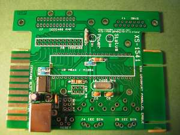

XS1541 Info
(C) 2019- André Fachat, Nils Eilers
This page describes the XS1541 interface that provides IEEE488 and IEC connectivity to a Commodore PET and/or C64 (or VIC20 or C128), using the PC as background storage using a Serial-over-USB connection.
I started this page as taken from Nils Eilers' excellent (German) building instructions as seen on the wayback machine of archive.org. I got the permission of Nils to do so by mail.
Please note that this device is basically still orphaned! Even this documentation is scraped together from the wayback machine at archive.org. I document this here only as I have one and use it.
- 2019-08-31 Started this page as a copy from Nils Eilers' building instructions
Table of content
- Introduction to XS1541
- Building XS1541
- Basic information on building and soldering
- Soldering the SMD chip FT232RL
- Ceramic Capacitors C2, C3 and C4
- Ferrit Bead
- Elko C7
- USB socket
- Checking for short circuits
- Driver installation
- First connection check
- Rest of the discrete components
- Atmel socket
- Connector pin rows
- LEDs
- Reset switch
- Reset Switch
- 15 pin Sub-D, 24 pin IEEE connector (AMP), IEC DIN connectors
- Preparing and installing the Atmel
- Programming the XS1541
The XS-1541 is an interface that connects older CBM drives with parallel IEEE bus like the CBM 8050 or CBM 4040, and the newer ones with serial IEC bus like the VC1541. 1571 or 1581 with a PC via a serial or USB interface.
A newer firmware allows to use the XS1541 as a disk drive for the Commodore PET or the Commodore computers with serial IEC bus like the C64, using the PC as a backing storage device.

{kind=link}
Hint on board connectors
{kind=link}
Unfortunately the given libraries for the board edge connectors where buggy, the slow connector is too narrow. If you use plugs without the coding bridges the connector could cause short cuts.
A pragmatic solution is to use small pieces of wood that are being cut to size and glued to the size of the card edges.
Original schematics and firmware
In this section I have put some of the original documents and firmware I could find.
- XS1541_Schaltplan_REV_D.pdf: the original schematics (unfortunately as PDF only)
- firmware_xs1541_rev_d.zip: the original firmware blobs. Especially important is the bootloader, that allows loading a new firmware via the serial interface, and without an SPI programmer
Basic information on building and soldering
Please also look at the building thread in the forum64 (see links). If you have registered there you can also ask questions.
If you don't have many experiences soldering, it helps practicing. See some links below
In general, if you need more than 2 or 3 seconds per soldering joint, you're doing something wrong. And use the right tools - e.g. a small soldering iron for SMD parts.
- Building thread in the forum64
- Reparing the C64 - a few questions (German)
- Temperature when soldering parts (German)
- A little soldering course (German)
Soldering the SMD chip FT232RL
1. Put soldering flux on the pads for the FT232 onto the board
{kind=link}
2. Position the chip: The chip as a circle mark that notes the position of pin 1. This circle must be in the direction of the circle as on the board.

The chip has to be positioned exactly on the pads! If the legs of the pin overlap two pads a short circuit occurs.
2. Fix the chip with a finger, and solder a single(!) edge pin - just put the soldering iron on the pin and pad (this works as the pads as well as the pin is already coated in solder, maybe depending on your board manufacturer). Check the position of the chip. If the chip has moved into a bad position, it can easily be moved back by heating up that single soldered pin. Then solder the pin on the diagonally separated edge.
Don't solder more than 2-3 seconds in a row!
{kind=link}
3. Solder the chip: solder the other pins by moving the soldering iron across all the pins (note: this only works with pads and pins being pre-coated with solder.)
4. check the soldering work: check all the connections of the SMD chip against short circuits and connections to the actual signals. Do it now - later the FT232 it is much more difficult.
The pins are very close to each other, but can still be checked with a simple multi-meter.
There are 7 signals at 13 points to be checked.

| Name | Probe point | Pin on FT232RL |
|---|---|---|
| VCC | SER P7 pin 2 | 4 and 20 |
| GND | SER P7 pin 6 | 7, 18, 21, 25, and 26 |
| TXD | SER P7 pin 4 | 5 |
| RXD | SER P7 pin 1 | 1 |
| USB D+ | J2 USB socket pin 3 | 15 |
| USB D- | J2 USB socket pin 2 | 16 |
| 3V3OUT | C3 pin 1 (top) | 17 |
If something went wrong and short circuits could be removed using soldering wick, the chip can be - carefully(!) - removed using a desoldering hot air fan (not a hair fan even though it looks like it!) The pads should be cleared from solder using soldering wick, then a new attempt can be started.
5. cleaning the board: remove all rests of flux from the board. I usually scrub the board with a toothbrush (only used for this purpose!) under flowing water, then dry it with some kitchen paper.
Ceramic Capacitors C2, C3 and C4
Now the certamic capacitors (and only those) have to be soldered:
- C2 100 nF (usually a "104" printed on it)
- C3 100 nF (usually a "104" printed on it)
- C4 10 nF (usually a "103" printed on it)
Please note that C4 on the board has three holes, even though a capacitor only has two connections. This is made such that you can use parts with a 2.5mm or with a 5mm pin distance. Just put one pin in the one of the three holes that is separated in the silkscreen print, and use one of the other holes as fits.
When soldering the caps, put the leads through the holes, bend them a bit so they don't fall out, and solder them in place on the bottom. Then cut away the rest of the lead. Don't throw the cut leads away (yet), you will need some of them later
Ferrit Bead
{kind=link}
Take the longest of the leads that you cut from the caps, and put it through the ferrit bead, then solder the two ends to the board.
Elko C7
The electrolytic capacitor C7 has a white (or lighter colour) stripe on one side containing a minus sign. The lead on this side must go to the hole that is marked with a minus sign on the layout. The other lead must of course go into the hole marked with '+'. Never do it the other way round!
USB socket
{kind=link}
The USB connector will be soldered to postion J2 USB. The stabilizing pins don't need to be bent, but can be just soldered into their holes.
Checking for short circuits
Measure the resistance between the supply voltages VCC and GND at the two connections of C1 in the middle of the board. It should be larger than zero, i.e. no short circuit. A sample value was 470kOhm. If the resistance is equal or near zero there is a short circuit that needs to be fixed before the board is connected to the PC the first time via USB
Driver installation
Install the drivers for your operating system. Linux has it already in the kernel, so there is nothing to do. For Windows, you need to download and install a driver from the FTDI drivers page.
First connection check
Now the board can be put under a first functional test. After connecting the board to the PC via USB cable, the PC must identify a new serial interface.
Under Windows that is a message like 'new hardware found' and 'hardware can now be used'.
Under Linux you can open a console and, after connecting the USB cable,
execute the command dmesg. Some
lines of messages will be shown, some like those should be included:
[ 9133.432067] usb 2-3: new full speed USB device using ohci_hcd and address 3 [ 9133.702367] usb 2-3: configuration #1 chosen from 1 choice [ 9133.778736] USB Serial support registered for FTDI USB Serial Device [ 9133.778861] ftdi_sio 2-3:1.0: FTDI USB Serial Device converter detected [ 9133.778903] usb 2-3: Detected FT232RL [ 9133.778988] usb 2-3: FTDI USB Serial Device converter now attached to ttyUSB0 [ 9133.779013] usbcore: registered new interface driver ftdi_sio [ 9133.779017] ftdi_sio: v1.4.3:USB FTDI Serial Converters Driver
Here you can see that the device is assigned to the Linux device /etc/ttyUSB0.
The cable can now be removed and further parts can be installed
Rest of the discrete components
{kind=link}
'Discrete' components are components with a single function, like resistors, capacitors, or crystals:
- R1 10 kOhm
- R2 680 Ohm
- R3 330 Ohm
- X1 Crystal 14.7456MHz
- C1 100nF
- C5 22pF
- C6 22pF
Before soldering it looks somewhat like a hedgehog...
{kind=link}
Atmel socket
{kind=link}
The socket needs to be oriented such that the notch matches the notch on the silkscreen print, left above the SMD chip. This notch determines how to insert the Atmel chip later and is thus quite important to get right.
If the socket has a connection in the middle, like in the picture here, it may need to be cut away, so that it does not lay on top of the resistor.
The socket needs to be put into the holes such that it completely lies on the board with all pins going though the holes.
{kind=link}
Then solder pins 1 and 21 of the socket. Check if the socket is fully inserted and plain on the board. If not, heat one of the soldered pins with the soldering iron, and press the socket against the board. Repeat also with the second soldered pin until the socket fits. Then solder the rest of the pins.
After soldering all pins, gently bend C1 to the side so that it does not prohibit puting the Atmel chip into the socket properly.
Connector pin rows
For the connector pin rows, only solder one pin first, and adjust gently if necessary by -resoldering this pin while pressing the pin rows to the board as needed. Only if the pins look good solder all pins, starting from the other end.
Another trick is to attach the connector to the pin rows to keep them in place.
LEDs
Reset switch
The green LED signals power, the yellow LED shows the status. The LEDs need to be soldered in the right orientation, or they won't light up. There are three possibilities to find the right orientation:
- One lead of the LED is a bit longer (+), the other is shorter (-). One hole in the board is square (+), the other is round (-). The longer lead must go to the square hole.
- The ring around the LED has a flat part on one side (-). (help: where there is less material, there is less... -) This flat part (-) is marked on the silkscreen with a notch (-).
- The inside of the LED consists of a large triangle (-) and a smaller triangle (+). The larger triangle goes into the round hole
Reset Switch
For the reset switch the stabilizing pins don't need to be bent. Just solder them
15 pin Sub-D, 24 pin IEEE connector (AMP), IEC DIN connectors
Placing those connectors on the board is a bit difficult. You need to make sure that all pins are getting through the holes and are not bent to the side.
Preparing and installing the Atmel

The unprogrammed Atmel comes with the pins bent a little bit to the outside. It helps bending the pins to the inside so they have a 90 degree angle to the board, to better fit into the socket.
To do this you can gently hold the chip with its pins to a flat surface like a table top, and gently bent the pins.
Then the Atmel chip needs be put into its socket. It needs to go into the socket in the right orientation! The chip has a notch on one side that must correspond to the notch on the socket or silkscreen print.
First put the chip loosely on top of the socket, and control that all(!) pins are in the middle of the socket holes. If one pin is not centered, it could be bent when pushing the chip into the socket. In that case the chip needs to be taken out of the socket again, the pin needs to be aligned and another attempt started.
If all is good gently push the Atmel into its socket. Check if all pins are going into their socket holes. Continue until the Atmel is fully seated in the socket.
The XS-1541 uses a programmable chip from Atmel - that needs to be programmed with a firmware.
Setup programming the Atmel on Linux
You can program the Atmel on Linux using avrdude. Unfortunately no further description available right now.Setup programming the Atmel on Windows
Unfortunately there only exists a German description on the wayback machine.Setting the fuses
Nach dem Aufstecken des ISP-Kabels empfiehlt es sich, erst einmal den Status und die Verbindung zu prüfen: avrdude -v -c stk200 -P lpt1 -p m644 Anschliessend wird der Bootloader aufgespielt: avrdude -v -c stk200 -P lpt1 -p m644 -U flash:w:bootloader.hex:i Jetzt müssen noch die Fuses gesetzt werden. Entweder alle auf einmal... avrdude -v -c stk200 -P lpt1 -p m644 -U lfuse:w:0xFF:m -U hfuse:w:0xD4:m -U efuse:w:0xFC:m -U lock:w:0x2F:m Da ich einmal Schwierigkeiten hatte, alle Fuses auf einmal zu setzen, habe ich mir angewöhnt, die Bytes einzeln zu schreiben: low fuse: avrdude -v -c stk200 -P lpt1 -p m644 -U lfuse:w:0xFF:m high fuse: avrdude -v -c stk200 -P lpt1 -p m644 -U hfuse:w:0xD4:m ext'd fuse: avrdude -v -c stk200 -P lpt1 -p m644 -U efuse:w:0xFC:m lock fuse: avrdude -v -c stk200 -P lpt1 -p m644 -U lock:w:0x2F:m
Flashing the firmware
With the bootloader in place you can flash the firmware in the first three seconds after each reset. Just paste the following command line into your console, press reset on the XS1541, then press return in the console to start the programming.
(Note this is a windows example - rewrite the device on Linux)
avrdude -v -c avr109 -P COM3 -b 115200 -p m644 -u -U flash:w:XS1541-v0.02.01-644-115200.hex:i
OpenCBM firmware
The OpenCBM firmware allows controlling a disk drive from the PC using the XS1541 device.XD2031 firmware
The XD2031 firmware allows using the PC as disk drive for the Commodore.Return to Homepage
Last modified: 2019-09-01